实时性能洞察：面向多GPU Pre-Silicon验证环境的AI加速Trace驱动分析
该论文针对多GPU数据中心高速互连验证中性能瓶颈定位耗时数周至数月、且受FSDB存储与后处理成本限制只能分析约10%回归测试的问题，提出一套AI增强的debug基础设施。方法上分三层：在UVM环境中嵌入SystemVerilog packet/credit tracker，以小于0.1%的仿真开销实时输出结构化trace替代FSDB波形；其上构建带宽（rolling window）、credit背压（三级严重度分类）、包延迟pipeline可视化、buffer深度校验等分析引擎；再通过Model Context Protocol (MCP)让Claude/Cursor等LLM以自然语言自动编排多工具诊断流水线，并结合架构规格与历史bug库给出根因。工具开发采用四阶段方法（人工模式提取、Perl/Python原型、LLM辅助代码生成、golden reference交叉校准）。结果显示瓶颈定位从数周缩短到分钟级，回归分析覆盖率从10%提升到100%，准确率98%、误报率小于3%，并实际发现buffer欠尺寸、credit返回bug与BFM建模错误等问题。论文明确声明该方法可推广到UCIe、CHI、PCIe等credit-based流控协议IP，与本团队UCIe/高速互连产品线的性能验证场景高度契合。
多GPU数据中心互连验证中，传统基于FSDB波形生成与人工日志/波形分析的性能瓶颈定位需要数周至数月；受存储（500GB-2TB）与后处理（2-6周）成本限制，团队最初只能分析约10%的测试，其余被迫right-shift；性能问题根因需Architecture、RTL、DV团队串行交接，单个debug周期累计40-80小时；性能bug晚发现直接威胁tapeout与first-time-right silicon目标。
三层架构。Layer 1：在UVM环境中嵌入轻量级SystemVerilog tracker（packet tracker与credit manager），以被动监测、非阻塞文件I/O、条件编译开关方式实时流式输出人类可读结构化trace（共享$time时间基准、picosecond粒度、唯一包索引、多路径路由与VC信息），消除FSDB生成与波形debug依赖。Layer 2：分析引擎套件，包括traffic-aware双向带宽分析（rolling window、auto-range）、credit背压检测（CRITICAL/SEVERE/MEDIUM算法级严重度分类与duration过滤）、端到端与block-to-block包延迟分析及pipeline可视化、buffer深度计算器、从Excel规格与HDL defines自动提取架构带宽基线并做偏差合规检查。Layer 3：通过MCP server将全部工具暴露给Claude/Cursor等LLM agent，实现自然语言查询、依赖感知的多工具编排、跨工具发现关联与置信度评分、结合架构规格与仓库历史bug模式匹配的根因综合。工具开发遵循四阶段迭代方法：Stage 1人工trace模式提取建立ground truth；Stage 2 Perl/Python算法原型；Stage 3利用GPT-4 Turbo、Claude 4.5 Sonnet与Cursor AI做LLM辅助递归代码生成；Stage 4对照UVM scoreboard与FSDB测量的golden reference做交叉验证（要求偏差<1%）并回归测试。
整体准确率98%、误报率<3%，覆盖100%仿真运行
瓶颈识别从数周缩短至分钟级：引言称80x加速（统一诊断1-4小时 vs 跨团队40-80小时），结论称50-80x根因定位加速，部署部分称100-200x时间节省
回归分析覆盖率从10%提升到100%；单次debug周期从10-15天缩短到1-2小时
Case Study #1：双向写流量11%带宽退化（7.84→6.98 GB/s），AI定位receive buffer欠尺寸用时8分钟 vs 人工3-4天
Case Study #2：50/50混合读写流量7%带宽损失（write-only 7.9 GB/s vs mixed 7.3 GB/s），AI定位credit返回机制bug（RSP VC计数为零仍多等一拍）用时10分钟 vs 人工1周
Case Study #3：加权读写流量3%带宽损失（期望7.8 GB/s、实际7.6 GB/s），rolling window时域分析发现聚合统计掩盖的读/写瞬时失衡，根因为BFM response buffer建模问题，用时12分钟 vs 人工1-2周
trace存储2-20GB vs FSDB的500GB-2TB，最高1000x存储缩减；tracker典型仿真开销<0.1%
LLM辅助代码生成使工具开发加速5-10x（2天人工编码任务变为2-4小时迭代）；AI生成工具与基线偏差<1%
MCP集成仅需2-3行JSON配置，无需代码修改、重编译或基础设施部署；MCP编排带来10x debug时间缩减
相对已有工作的区别：(1)以嵌入式SystemVerilog tracker实时生成结构化trace替代FSDB波形后处理，实现近零开销与100%回归覆盖，突破存储与后处理瓶颈；(2)通过MCP将孤立的Perl/Python分析脚本升级为LLM编排的对话式多工具诊断生态，自动完成工具选择、依赖感知执行链、跨工具结果关联、置信度评分去误报、历史bug模式匹配；(3)提出可复制的四阶段'专家知识捕获→原型→LLM生成→golden reference校准'AI工具开发方法学，并以<1%偏差验收标准保证生产级可靠性；(4)rolling window时域分析能发现聚合统计掩盖的局部流量失衡（Case Study #3），避免把测试基础设施问题误判为硬件bug；(5)提出基于同一MCP基础设施打通pre-silicon与post-silicon的统一验证-验证生态愿景，用LLM自动生成trace格式适配器实现跨域工具移植。
相关度级别：high
命中能力域：2.4 设计验证方法学 | 2.7 EDA/验证自动化与 AI 辅助
理由：论文直接命中两个能力域：tracker嵌入UVM环境、面向回归的性能debug与triage属于2.4设计验证方法学的核心工程场景；四阶段LLM辅助工具开发、MCP编排与对话式debug属于2.7 EDA/验证自动化与AI辅助。更关键的是，论文的分析对象——credit-based流控、virtual channel、buffer深度、带宽/延迟、rolling window流量分析——正是本团队UCIe、HBM4、LPDDR等高速互连与存储IP性能验证的日常内容，论文结尾明确声明方法可推广到UCIe、CHI、PCIe、CXL、NoC等credit-based协议IP，且移植仅需domain-specific trace格式适配器。对团队而言，可直接借鉴其tracker+分析引擎+MCP编排的分层模式，将现有分散的性能分析脚本沉淀为可复用、可编排的自动化debug资产。
建议动作：深入精读并做内部分享
实时性能洞察：面向多GPU流片前验证环境的AI加速追踪驱动分析
Vinoth Selvan
NVIDIA 公司
得克萨斯州奥斯汀
Prashanth Rajan
NVIDIA 公司
得克萨斯州奥斯汀
摘要：多GPU数据中心架构中的高速互连验证在性能分析与瓶颈检测方面带来了前所未有的挑战。传统的调试方法需要数周乃至数月才能完成全面分析，给验证周期造成了显著延迟。本文提出了一种新颖的人工智能（AI）增强调试基础设施，通过采用大语言模型（Large Language Models）的系统性四阶段开发方法，将追踪驱动的性能分析从手动流程转变为自动化工作流。我们的AI调试洞察套件包含一个由多种分析引擎构成的集成框架：流量感知带宽分析、基于信用的流控检测、带流水线可视化的综合数据包延迟分析，以及带测试配置验证的自动架构带宽提取。该框架处理来自通用验证方法学（UVM）验证环境的数据包跟踪器与信用跟踪器，能够对延迟、流量遍历和背压检测进行实时分析，并生成基于滚动窗口的性能报告。我们通过模型上下文协议（Model Context Protocol, MCP）集成，将这些调试工具增强为一个智能编排框架——把孤立的分析工具转变为AI驱动的诊断生态系统。MCP作为一种行业标准接口，使我们的系统能够理解自然语言查询并自主编排多工具分析流水线。工程师以对话方式表述复杂的性能问题，而我们集成MCP的框架会智能选择最优的分析器序列、执行具备依赖感知能力的工具链、通过置信度评分对各分析结果进行交叉关联以消除误报，并融合架构规范以及来自代码库搜索的历史缺陷模式匹配信息，综合生成全面的诊断结果。实施结果表明执行效率获得了显著提升，在保持全面覆盖的同时，将瓶颈识别时间从数周缩短至数分钟。我们成功识别了关键的流片前硬件问题，包括容量不足的缓冲区、基于信用的流控缺陷以及测试基础设施配置错误。该方法为流片前验证环境中的AI辅助性能分析确立了新的范式，在分析100%仿真运行的情况下，实现了98%的准确率和低于3%的误报率。
多GPU数据中心系统需要严格的互连验证，以确保在复杂流量模式下实现最优性能。传统调试方法依赖人工日志分析、信号波形生成以及基于波形的调试，分析耗时数周至数月，形成了关键的验证瓶颈。识别性能瓶颈需要整合架构规范、寄存器传输级（RTL）实现约束和验证流量模式，这要求架构、RTL和设计验证（DV）团队之间的协同配合。复杂的性能问题往往需要数周时间才能定位根因，而由于顺序交接和上下文切换开销，这些团队典型的调试周期累计达40-80小时，直接影响项目进度。性能缺陷发现过晚会对流片目标和一次流片成功目标构成重大风险。资源限制使得最初仅能分析10%的测试用例，团队最终被迫通过分析其余测试用例将验证工作右移——进一步延误项目进度。我们的AI调试引擎消除了这些开销：自主架构查询、自动化约束关联和智能流量分析可在1-4小时内交付统一诊断结果，且无需任何跨团队协调，从而能够实时分析100%的测试用例——速度提升80倍。
本文提出了一种新颖的AI增强调试基础设施，借助自动化技术变革高速互连性能验证，在加速踪迹驱动分析的同时，保持对带宽分析、流控验证和延迟测量的全面表征。图1展示了完整的验证基础设施，标明了我们的AI增强踪迹分析集成到现有通用验证方法学（UVM）环境中的位置。我们的架构由三个协同工作的基础层组成：
第1层：嵌入式跟踪器——轻量级SystemVerilog监视器直接嵌入被测设计（DUT）内部，在仿真期间提供实时踪迹流，且对性能零影响。这些跟踪器生成人类可读的结构化日志格式，从而免除了波形生成的需要，使得能够在数据包旅程、信用流和事务模式于仿真环境中发生时对其进行即时分析。尽管业界存在多种波形格式（FSDB、SHM、VCD、EVCD），本文通篇以快速信号数据库（FSDB）作为代表性示例。
第2层：分析引擎套件 - 架构带宽提取器解析Excel格式的规范和HDL defines以建立性能基线，并将其馈送至流量感知带宽分析器，用于自动化偏差分析和合规性检查。信用反压检测器通过严重性分级识别流控瓶颈，而数据包延迟分析器则提供端到端和块到块的时序，并附带流水线可视化。缓冲区深度计算器对照架构要求验证FIFO容量设置，以实现最优的延迟和带宽。
第3层：AI集成层 - 模型上下文协议（MCP）使大语言模型能够通过自然语言接口编排整个调试工作流。该层将工程师的查询转换为多工具执行序列，自动关联不同分析引擎的发现结果，以提供全面的诊断结果。模式匹配算法基于历史故障模式生成根本原因建议，而MCP服务器架构则确保与Claude等AI助手以及自定义验证智能体的无缝集成。
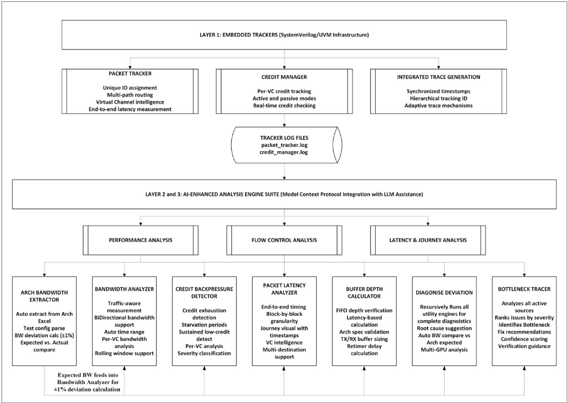
我们的AI增强调试框架基于由嵌入在UVM验证环境中的SystemVerilog追踪器基础设施所生成的追踪数据运行。本节介绍三个核心追踪组件，它们为所有后续分析提供基础数据流。
数据包追踪器实现了跨互连架构的数据包旅程监控，以皮秒级粒度捕获详细的时序测量结果与路由决策。该追踪器作为被动监视器运行，对仿真吞吐量零性能影响，并通过 SystemVerilog 接口与被测器件（DUT）信号对接。其关键能力包括唯一数据包标识、多路径路由支持、虚拟通道智能、流水线级粒度，以及通过请求-响应关联实现的往返延迟测量。
大量性能剖析表明，该追踪器对仿真性能无可测量的影响。追踪器采用非阻塞文件 I/O 操作、缓冲写入以及条件编译标志，可针对不同测试场景选择性地启用/禁用。对于生产级测试平台，典型开销为仿真时间增加 <0.1%。
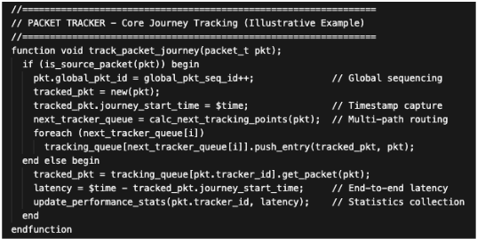
信用管理器在所有虚拟通道（VC）上提供基于信用的流控监测。该管理器维护针对每个 VC 的信用跟踪，具备主动/被动监测模式、实时信用可用性检查，以及可生成详细活动追踪记录的日志功能。这些追踪记录支持对信用动态的离线分析、对信用返回路径低效问题的识别，以及对信用协议实现的验证。
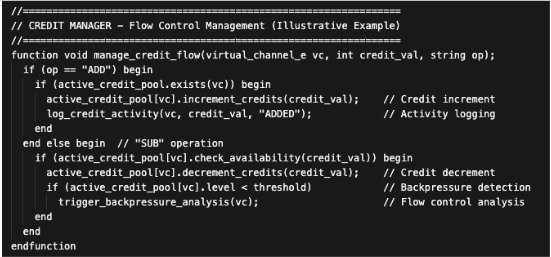
组合后的基础设施可生成具有同步时间戳、分层跟踪标识符和实时追踪流式传输的丰富追踪数据流，消除了对传统 FSDB 生成和波形调试的依赖，并借助自适应过滤机制实现即时分析。数据包追踪器与信用追踪器中的所有事件共享统一的时间基准（SystemVerilog 中的 $time），从而实现精确关联。这对于分析因果关系至关重要，例如“信用饥饿是否导致了数据包延迟增加？”
我们的带宽分析引擎代表了从传统仿真后分析到直接在追踪数据上运行的实时性能报告的范式转变。该分析器通过支持所有不同的命令类型展现出先进的理解能力，采用流量感知智能，根据操作特性调整其报告方法。
该系统实现了双向带宽流量分析，认识到不同的事务类型表现出不同的流量特性。对于双向场景，它计算平衡的平均带宽，而方向性操作则优先采用适当的度量指标。该框架集成了皮秒级粒度的计时与自动量程检测，从而能够快速识别瓶颈。
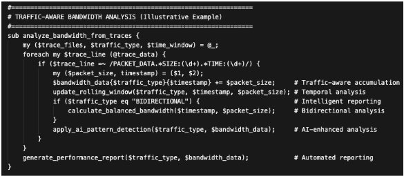
我们的AI增强型基于信用的流量控制分析能够检测并表征影响系统性能的信用背压事件。该实现采用持续性背压检测算法，在识别真实瓶颈的同时过滤瞬态信用波动。
一项关键创新是算法化的严重性分级，将背压事件划分为三个级别：CRITICAL（完全的流量停滞，即队头阻塞）、SEVERE（显著约束）和MEDIUM（中等背压）。这种分层分级使工程师能够确定调试工作的优先级，同时持续时间过滤消除了短暂信用波动带来的噪声。该框架还实现了多文件分析能力，可同时处理多个日志文件，并通过自适应过滤针对特定的互连路径。
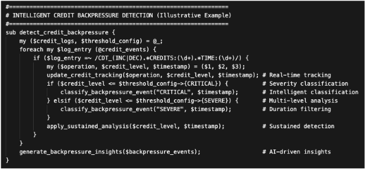
我们的数据包延迟分析提供贯穿硬件流水线各级的数据包旅程跟踪，实现对块间延迟测量的可见性，从而能够在流水线级粒度上识别性能瓶颈。
该实现以逐块粒度捕获完整的数据包遍历路径，并具备旅程可视化功能，用于理解数据通路流和识别拥塞。该系统实现了虚拟通道智能，为请求与响应流量模式提供专用分析模式。
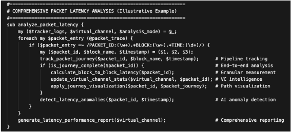
Our AI-enhanced analysis tools development followed a systematic four-stage iterative refinement process: (1) Stage 1: Baseline pattern extraction through manual trace log analysis using regex-based filtering and statistical profiling to identify performance signatures. (2) Stage 2: Algorithm prototyping where insights were implemented as Perl/Python analysis engines with configurable thresholds. (3) Stage 3: LLM-assisted code generation utilizing prompt engineering with domain-specific verification context, enabling recursive script enhancement across traffic scenarios. (4) Stage 4: Cross-validation and calibration to eliminate false positives.
The development leveraged Cursor AI and LLM's including GPT-4 Turbo and Claude 4.5 Sonnet, and domainspecific assistants. This approach achieved rapid algorithmic convergence while preserving verification rigor through context-aware prompt engineering, and multi-modal data correlation, enabling AI-enhanced tools to mature from human expertise into analysis tools combining automation speed with engineering insight quality.
Stage 1: Baseline Pattern Extraction - Experienced verification engineers manually analyzed trace logs from known performance failures to identify recurring patterns and define quantifiable metrics. This human expert knowledge capture established the ground truth for performance signatures, correlating credit exhaustion with backpressure, latency spikes with VC contention, and bandwidth degradation with buffer exhaustion.
Stage 2: Algorithm Prototyping - We implemented initial algorithms in Perl/Python to codify the patterns discovered in Stage 1, creating parsers for trace log formats and calculators for performance metrics. These prototype tools automated bandwidth measurement, credit flow analysis, and latency profiling, achieving functional correctness but requiring significant manual effort for each new analysis capability.
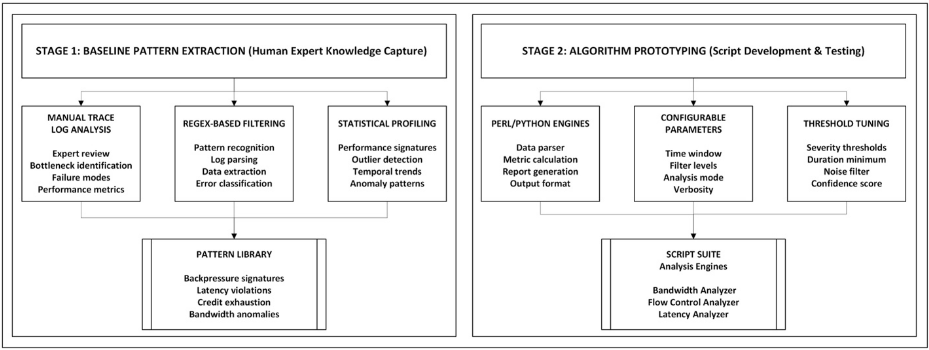
Stage 3: LLM-Assisted Code Generation - We leveraged Claude AI through recursive enhancement workflows to generate sophisticated tool variants and new analysis engines from natural language specifications. The LLM accelerated development by 5-10x, transforming 2-day manual coding tasks into 2-4-hour iterative refinement sessions while maintaining code quality through human review and validation.
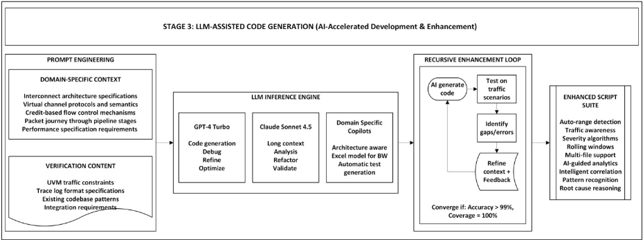
Stage 4: Cross-Validation & Calibration - Every AI-generated tool underwent rigorous validation against golden reference data from manual expert analysis of UVM scoreboard checkers and FSDB-based measurements. We established acceptance criteria requiring <1% deviation from baseline results, with systematic regression testing across diverse test scenarios to ensure production-grade reliability and accuracy.
持续学习循环——现场部署反馈持续改进我们的工具套件，工程师报告的边缘案例推动了算法改进与新能力开发。该闭环系统将缺陷报告、功能请求和性能失效模式重新整合回第2-3阶段，构建出能够适应新兴验证挑战、不断演进的调试基础设施。
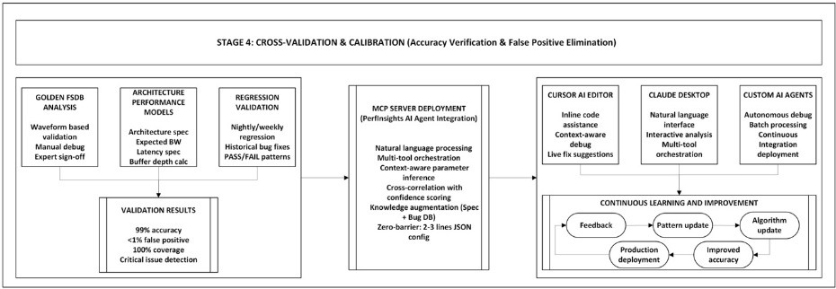
A critical enabler of our AI-enhanced debug infrastructure is the Model Context Protocol (MCP), an open standard that provides a universal interface for AI assistants to interact with external tools and data sources. Understanding MCP is essential to appreciating the transformative potential of our approach. MCP standardize how AI systems (like Claude, GPT-4, or custom LLM agents) communicate with external tools, databases, and services.
传统工作流程要求工程师生成海量 FSDB 波形、手动检查信号，并通过迭代调试周期来定位问题——这一过程往往需要数天乃至数周。我们的 AI 分析引擎（阶段 2）通过基于追踪的工具消除了 FSDB 的生成，但仍要求工程师掌握每个工具的调用语法，并手动编排多工具工作流。MCP 集成（阶段 3）完成了这一转型：通过支持自然语言查询，自动选择合适的工具、编排复杂的分析序列，并在几分钟内交付关联的根因报告。
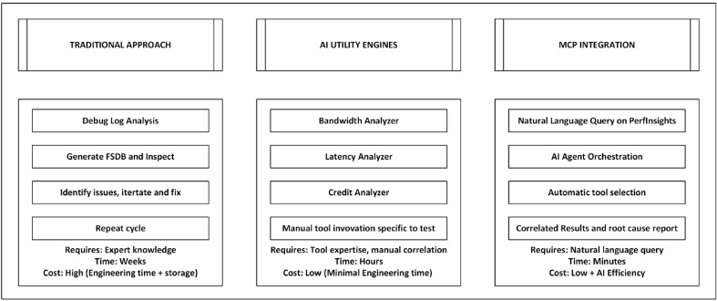
PerfInsights MCP 服务器通过标准化接口开放了整套调试工具组合。当工程师向 Claude 或 Cursor AI 提问：“调试 testX 性能失败”时，AI 智能体（AI agent）会：
这从根本上将验证从劳动密集型的手动工具调用转变为智能的对话式调试，使工程师能够用自然语言表述复杂的性能问题，而 AI 智能体则自主编排复杂的多工具分析流水线、综合跨领域洞察，并交付可执行的根因诊断。其结果是调试时间缩短 10 倍，同时将专家级分析能力普及到整个验证团队。
我们的 AI 增强调试基础设施展现了变革性的效率提升，从根本上改变了团队定位性能瓶颈的方式。传统的基于 FSDB 的方法需要数周乃至数月的手动波形分析，而我们的追踪驱动（trace-driven）方法结合知识增强诊断，可在几分钟内完成根因定位——实现了两个数量级的加速，同时保持了严谨的分析精度。传统的 FSDB 生成带来 4 周的完成周期和 TB 级的存储需求，迫使团队只能分析其回归测试套件（regression suite）的 10%，最终被迫通过分析其余测试将验证工作右移（right-shift），进一步延误项目进度。我们的方法消除了这一瓶颈，以零开销实时生成轻量级性能日志，使 100% 的测试都能得到分析。PerfInsights 在 GPU 全芯片及下游数据通路验证团队中的部署展现出一致的调试时间缩短效果，直接转化为签核（sign-off）进度的加快，以及在验证周期中更早地发现性能缺陷。
为确保基准测试的严谨性与可复现性，我们建立了一套系统化的测试选择方法，涵盖全芯片集成测试与单元级 IP 验证。这种双重范围的方案验证了我们的框架在整个验证层级中的有效性。下表给出了传统基于 FSDB 的分析与我们的 AI 增强追踪驱动方法在关键验证指标上的性能对比。
| Category | Traditional FSDB | AI-Enhanced Trace | Impact |
|---|---|---|---|
| Verification Coverage | |||
| Tests Analyzed per Regression | 10% (100/1000) | 100% (1000/1000) | 10x |
| Coverage Limitation | FSDB infeasible | Real-time traces | Eliminated |
| Debug Efficiency | |||
| Root Cause Identification | 2-4 weeks | 1-4 hours | 50-80x faster |
| Engineer(s) Hours per Issue | 40-80 hrs (Arch+RT+DV) | 1-2 hours (AI-orchestrated) | 40-80x |
| Cross-Team Coordination | Manual (3+ teams) | AI autonomous | Eliminated |
| First-Try Accuracy | 60% (manual) | 97-98% (AI-guided) | 63% better |
| False Positive Rate | 15% | 1-3% | 6x better |
| Storage & Infrastructure | |||
| Storage per regression (1000 tests) | 500GB-2TB (Failing tests) | 50-200GB (Trace for all tests) | 10x better |
| FSDB Generation Time | 2-4 weeks | 0 (not required) | Eliminated |
| Waveform Tool Licenses | Expensive | $0 | Eliminated |
| AI-Driven Innovation | |||
| Natural Language Debug | ✗ | ✓ (MCP-enabled) | New paradigm |
| Multi-Tool Orchestration | ✗ (manual) | ✓ Autonomous | Breakthrough |
| Architectural Spec Integration | ✗ | ✓ Auto-query IAS | First in EDA |
| Bug Repository Correlation | ✗ | ✓ Semantic search | Novel |
| Scalability | |||
| Full-Chip Tests (100s GB sims) | Infeasible | 3-10 min analysis | Enabled |
| Regression Throughput | 50 tests/day | 5000 tests/day | 100x |
| Category | Traditional FSDB | AI-Enhanced Trace | Impact |
我们展示了三个来自验证实践的案例研究，证明了我们的 AI 增强多工具编排方法如何在几分钟内识别出关键硬件缺陷及其根本原因，而传统的人工调试则需要数周时间。每个案例研究都展示了这一自动化工作流程：症状检测 → AI 驱动的工具选择 → 多工具关联 → 架构上下文集成 → 根本原因诊断与修复建议。
症状：双向写流量中出现 11% 的带宽劣化。Bandwidth Analyzer 通过滚动窗口检测到在第 3 个窗口处 BW 从 7.84→6.98 GB/s 的渐进式下降。AI 调用了 Arch BW Extractor（确认与 Excel 规格相比存在 11% 的偏差）和 Credit Backpressure Detector（在同一窗口中识别出接收侧信用耗尽）。Buffer Depth Calculator 标记出相对于带宽-延迟要求的缓冲深度不足。根本原因：接收缓冲器深度不足——滚动窗口分析精确定位了因缓冲不足而导致信用反压的确切报文范围。修复：依据架构指南增加了缓冲深度。
案例研究 #2：混合读/写流量下的信用返回缺陷（AI 10 分钟 vs 人工 1 周） 症状：在 50% 读 / 50% 写流量（混合 32B/64B 命令）下出现 7% 的带宽损失。Bandwidth Analyzer 检测到性能下降（纯写：7.9 GB/s ✓，混合：7.3 GB/s ✗）。按虚拟通道（VC）细分显示 REQ VC 出现停顿，而 RSP VC 仍有可用信用。根本原因：缓冲器的轮询（round-robin）信用返回机制在转向 REQ VC 之前，即使 RSP VC 的信用计数器为零，也会在 RSP VC 处额外停顿一个周期，从而在某些命令大小不一的混合流量条件下延迟了 REQ VC 的信用返回。修复：立即跳过信用为零的 VC。
案例研究 #3：算法型工作负载上的总线功能模型（BFM）响应缓冲器建模问题（AI 12 分钟 vs 人工 1-2 周） 症状：在模拟复杂多 GPU 交互的加权读/写流量中出现 3% 的带宽损失（预期：7.8 GB/s，实际：7.6 GB/s），而整体仿真仍保持 50/50 的读写混合比例。标准的单窗口分析显示聚合统计正确，但滚动窗口分析检测到了时间上的不均衡——窗口 4：55% 读，窗口 7：45% 写，窗口 9：55% 读。根本原因：BFM 响应缓冲器建模将响应保持的时间比预期更长，导致信用返回产生时序依赖，从而造成临时的读/写不均衡。尽管聚合计数收敛到 50/50，但局部的时间不均衡降低了瞬时吞吐量。硬件（HW）运行正常；问题出在测试基础设施上。修复：修改 BFM 响应缓冲器，使其遵循架构规定的存储器系统延迟。关键洞察：滚动窗口时间分析检测到了被聚合统计所掩盖的 BFM 问题，避免了错误的硬件调试。
该框架在 GPU 全芯片验证团队及其下游依赖的工程组织中的快速采用，证明了它的实用价值和易于集成性。工程师们发现自然语言查询界面尤为宝贵，因为它消除了掌握专用 Perl 和 Python 分析工具所带来的传统学习曲线。以往只有具备深厚工具专业知识的高级工程师才能进行全面的性能分析，而 AI 集成方法使这一能力大众化——初级工程师和测试计划（testplan）开发人员现在可以用自然语言描述问题，并获得包含架构上下文、修复建议以及类似历史问题引用的自动化根因报告。
该框架对验证效率的影响十分显著。各团队报告称，测试覆盖率从回归测试套件的 10% 提升至 100%，因为消除 FSDB 生成开销使得对每一个测试进行分析在实际中变得可行。单个调试周期从 10-15 天缩短至 1-2 小时，自动化的多工具关联消除了传统上占据大部分调试时间的人工假设验证。这种加速在各回归周期中不断累积，使验证团队能够更早地检测并解决性能问题。
尽管该框架对已训练过的瓶颈模式行之有效，但它无法自主地对全新的失效模式或前所未有的极端用例进行根因定位。对于这些场景，MCP 辅助分析可提供方向性指引——缩小搜索空间并关联各类症状——但经验丰富的工程师仍须研判线索，并推动调试直至问题解决。在最坏的情况下，传统的 FSDB 分析仍然不可或缺，不过问题解决后的模式会被纳入实用引擎，以便未来实现自主检测。
我们的方法学为统一的 AI 调试平台奠定了基础，该平台通过共享的 MCP 基础设施将流片前验证与流片后确认连接起来。当前，验证团队在调试仿真失败时，与分析量产硬件的确认工程师彼此隔离——两个领域各自维护着独立的工具链、知识库和调试方法学。其中的关键技术洞见在于：我们的追踪驱动方法天然具备跨领域兼容性。在流片前阶段，SystemVerilog 追踪器生成数据包流与信用流追踪，捕获事务 ID、时间戳、带宽指标和延迟测量值。在流片后阶段，片上性能监视器、JTAG 接口、PCIe 遥测以及量产测量装置捕获结构上等价的数据——语义信息相同，只是文件格式不同。我们的调试引擎（带宽分析器、信用反压检测器、延迟分析器、缓冲深度计算器）作用于追踪文件而非仿真基础设施，因而天然具备可移植性。传统的工具移植需要数月的人工解析器重写，而大语言模型（LLM）辅助的代码生成则能依据追踪规范和样例数据，在数小时内自动生成格式适配器。
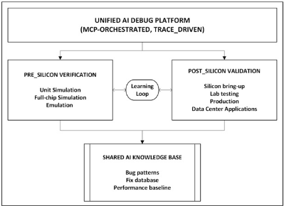
MCP 编排层保持不变，可在两个领域之间无缝协调经过适配的工具。我们设想扩展该框架以构建双向学习闭环：流片前的缺陷模式为流片后的异常检测提供参考，而量产硬件失效则反过来训练验证 AI 智能体，使其在设计周期的更早阶段识别出相似特征。这一统一生态系统维护着一个共享的 AI 知识库，汇集缺陷模式、架构规范、修复建议和性能基线——将当今碎片化的调试格局转变为一体化智能平台，使洞见能够在仿真、硬件仿真、FPGA 原型验证、实验室确认与量产数据中心之间自由流动，从而消除性能调试方法学中传统的流片边界。
本文证明，AI 增强的踪迹分析从根本上将性能验证从劳动密集型瓶颈转变为自动化智能。传统基于 FSDB 的方法因存储与生成成本高不可行，迫使团队放弃 90% 的测试分析；而我们结合知识增强诊断的踪迹驱动方法可提供 100% 的覆盖率，并将根因定位速度提升 50-80 倍——在单元级与全芯片验证中发现了多个关键硬件缺陷。
这一范式转变体现在：工程师以自然语言表述复杂的性能问题，AI 智能体便自主编排多工具流水线，跨带宽、延迟、信用流、架构规范与历史缺陷库综合提炼洞见——这些能力是手动单工具工作流所无法实现的。采用该方法仅需 2-3 行 JSON 配置或调用独立实用工具，且无需任何基础设施投入。
尽管本文在 GPU 互连验证上进行了演示，我们的方法学广泛适用于任何采用基于信用的流控协议与缓冲区管理的 IP——包括 PCIe、CXL、UCIe、一致性集线器接口（CHI）、片上网络结构以及高速串行互连。其核心技术（踪迹驱动带宽分析、信用耗尽检测、缓冲区深度验证、时间滚动窗口分析）在这些领域中均保持通用，只需针对特定领域适配踪迹格式，同时保留 AI 编排与多工具关联框架。
我们将 AI 加速的踪迹分析确立为新的验证标准，同时提供理论框架与经过量产验证的实现。随着数据中心架构扩展至数千个 GPU，这种开放的、基于 MCP 的方法是实现全面性能验证的唯一经济可行路径。验证社区今天即可采用这一方法学——将调试从依赖专家的手动分析转变为整个团队皆可使用的普及化对话式智能。我们为验证工程师带来的无异于时间旅行：强大的 AI 引擎协调多领域专业知识——架构规范、实现约束、流量分析——将数周的跨团队协调压缩为几分钟内准确率达 98% 的自主根因诊断。这一范式转变普遍适用于从 PCIe 到 CHI 乃至更广泛的各类基于信用的协议。性能验证已进入 AI 编排智能的时代。